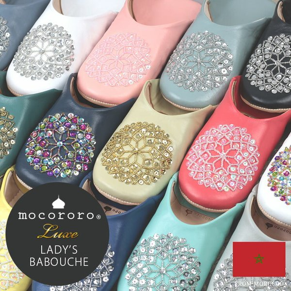
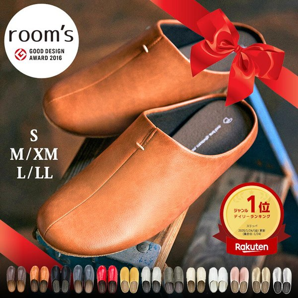
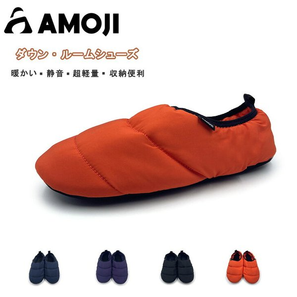
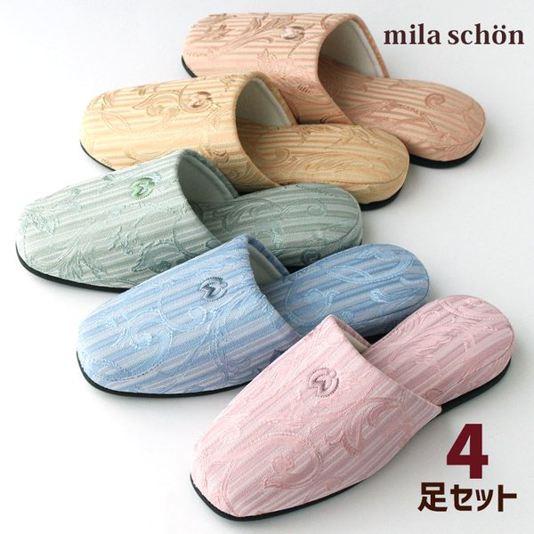
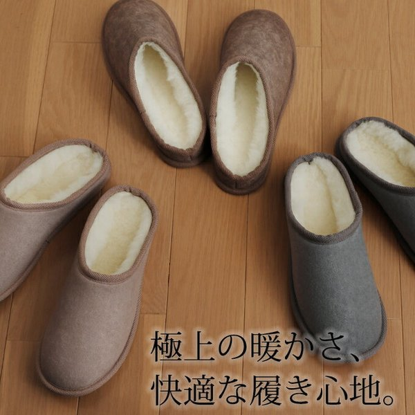
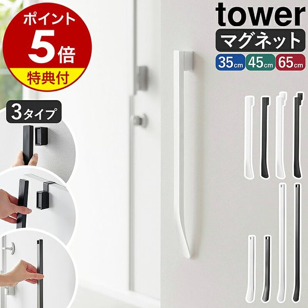
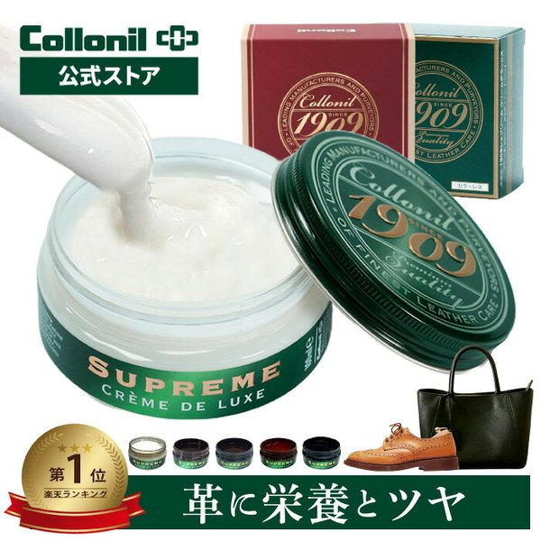
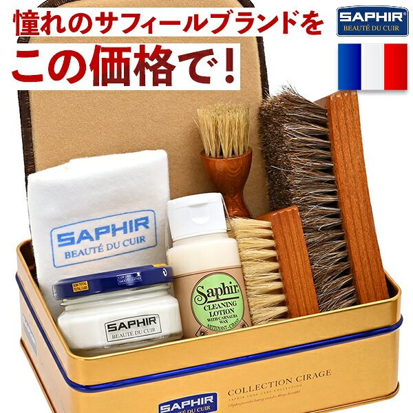
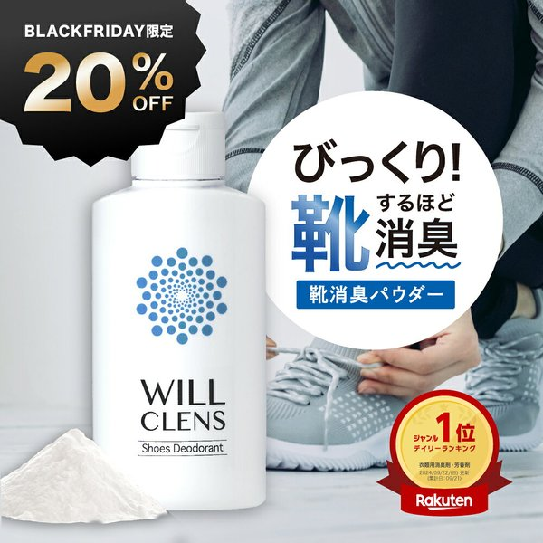
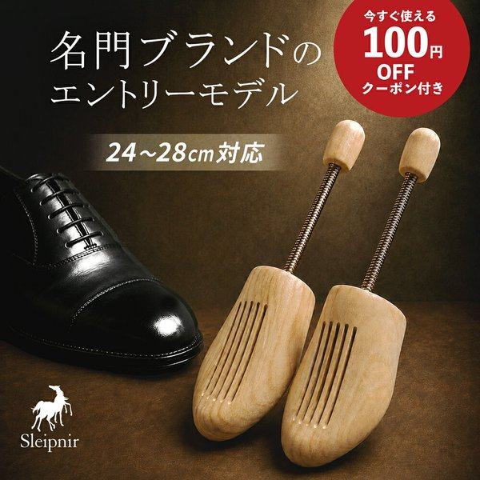

【2026年冬の底冷え対策】ルームシューズ・バブーシュ・来客用スリッパ・シューキーパー・靴磨き10選｜足元の冷えと革靴の傷みをまとめて解決
冬の足元の冷えは、厚い靴下よりルームシューズで解決したほうが早いです。床に触れる面積を減らすだけで、同じ室温でも体感が変わります。
選ぶ軸は3つです。まず室内用か来客用か。自分用は、保温性と洗えるかどうかで選ぶ。来客用は、サイズが合わなくても履けるフリーサイズと、拭ける素材が扱いやすいです。次に底の厚み。底が薄いバブーシュは室内の移動向け、かかとまで包むタイプは底冷えの強い部屋向けです。最後に靴の手入れ。靴ベラ、栄養クリーム、シューキーパーの3つがあれば、革靴の寿命ははっきり変わります。履いた後にシューキーパーを入れておくだけで、翌日の履き心地が戻ります。
本記事では、楽天市場で人気・高評価の冬のルームシューズと靴ケア10選を、実売価格とレビュー評価つきで写真付き紹介します。
- おすすめ10選 スペック・特徴比較表
- BEST 1｜モロッコ バブーシュ 本革ルームシューズ
- BEST 2｜スリッパ フェイクレザー 無地（S/M/XM/L/LL）
- BEST 3｜ダウンルームシューズ 静音タイプ
- BEST 4｜ジェラータ スリッパ4足セット
- BEST 5｜天然ウール ルームシューズ スリッパタイプ（日本製）
- BEST 6｜マグネット 靴ベラ 35cm/65cm
- BEST 7｜1909 シュプリームクリームデラックス 100ml
- BEST 8｜シューケア スターターセット シングルDX
- BEST 9｜フットパウダー 消臭粉末 110g
- BEST 10｜木製シューキーパー バネ式 フリーサイズ
- 【読者負担0円】買わなくても得する無料サービス
- まとめ：冬のルームシューズと靴ケア10選の選び方
| 順位 | 商品名 | ブランド | 最大の特徴・おすすめ理由 | 総合評価 |
|---|---|---|---|---|
| BEST 1 | モロッコ バブーシュ 本革ルームシューズ | モコロロ（mocororo） | 本革のバブーシュ | 4.73 |
| BEST 2 | スリッパ フェイクレザー 無地（S/M/XM/L/LL） | room's（ルームズ） | 5サイズから選べる | 4.64 |
| BEST 3 | ダウンルームシューズ 静音タイプ | アモジ（AMOJI） | 軽くて保温性が高い | 4.56 |
| BEST 4 | ジェラータ スリッパ4足セット | ミラショーン（mila schön） | ブランドロゴ入りの4足セット | 4.64 |
| BEST 5 | 天然ウール ルームシューズ スリッパタイプ（日本製） | メリノン | 天然ウールで暖かい | 4.57 |
| BEST 6 | マグネット 靴ベラ 35cm/65cm | 山崎実業（tower） | マグネットで壁に付けられる | 4.56 |
| BEST 7 | 1909 シュプリームクリームデラックス 100ml | コロニル（Collonil） | 革の栄養と保湿 | 4.79 |
| BEST 8 | シューケア スターターセット シングルDX | サフィール（SAPHIR） | 手入れ道具が1箱に揃う | 4.81 |
| BEST 9 | フットパウダー 消臭粉末 110g | ウィルクレンズ（WILL CLEAN） | 入れるだけの粉末タイプ | 4.61 |
| BEST 10 | 木製シューキーパー バネ式 フリーサイズ | スレイプニル（Sleipnir） | サイズ選びが不要 | 4.83 |
モロッコ バブーシュ 本革ルームシューズ

モロッコの職人が作るバブーシュ、モコロロの本革ルームシューズです。柔らかい革にビーズやスパンコールの刺繍が入り、履くほどに足になじみます。底は薄いので室内用。かかとを踏んで履けるので、ちょっとした移動にも便利です。来客用に1足置いておくと、部屋の印象が変わります。楽天市場での実売価格は約3,750円（2026年11月時点）。
- 本革のバブーシュ
- 手仕事の刺繍
- かかとを踏んで履ける
- 底が薄いので、室外では使えない
スリッパ フェイクレザー 無地（S/M/XM/L/LL）

睡眠用品のroom'sのスリッパです。フェイクレザーの無地で、S・M・XM・L・LLの5サイズから選べます。箱入りなので、来客用にも贈り物にも使えます。甲を包む形で、素足でも靴下でも履きやすい。汚れたら拭ける素材なので、毎日使いのスリッパとしても扱いやすいです。楽天市場での実売価格は約3,520円（2026年11月時点）。
- 5サイズから選べる
- 拭けるフェイクレザー
- 箱入りで来客用にも
- 真冬は素足だとやや冷たく、靴下が要る
ダウンルームシューズ 静音タイプ

アモジのダウンルームシューズです。中綿を詰めた軽い作りで、足を入れると保温性が高く、静かに歩けます。かかとまで包む形なので、床の冷気が伝わりにくい。洗濯機で洗えるので、汗をかく季節の前後に丸洗いできます。軽さと静音性は、集合住宅や夜の移動で効いてきます。楽天市場での実売価格は約2,199円（2026年11月時点）。
- 軽くて保温性が高い
- 静音で歩ける
- 洗濯機で洗える
- レビューは68件と、まだ少なめ
ジェラータ スリッパ4足セット

ミラショーンのジェラータは、来客用のスリッパ4足セットです。イタリアのブランドのロゴが入った、淡い色合いのスリッパ。底は滑りにくく、畳やフローリングのどちらでも使えます。4足そろっているので、家族が増えたときや、来客が重なったときにも足ります。箱から出してそのまま使えるのも、来客用として助かります。楽天市場での実売価格は約5,280円（2026年11月時点）。
- ブランドロゴ入りの4足セット
- 淡い色で来客用に合う
- 底が滑りにくい
- レビューは28件と少なく、サイズはフリー相当
天然ウール ルームシューズ スリッパタイプ（日本製）

メリノンのルームシューズは、天然ウール素材を日本製で仕上げたスリッパタイプです。ムートンのように暖かく、それでいて洗濯機で洗えるのが最大の特徴。羊毛は湿気を吸って発散するので、長時間履いても蒸れにくい。寒い季節の足元対策として、毎日履くものだからこそ、洗えるかどうかで寿命が変わります。楽天市場での実売価格は約7,920円（2026年11月時点）。
- 天然ウールで暖かい
- 洗濯機で洗える
- 日本製
- レビューは58件と少なく、価格は手頃なスリッパより高い
マグネット 靴ベラ 35cm/65cm

山崎実業のtowerシリーズ、マグネットで壁に付く靴ベラです。35cmと65cmの2サイズで、玄関の壁やドアに貼り付けておけます。立ったまま靴を履けるので、腰をかがめるのがつらい人や、子どもが自分で靴を履く練習にも向いています。石膏ボード壁にも対応する金具付きです。楽天市場での実売価格は約1,540円（2026年11月時点）。
- マグネットで壁に付けられる
- 立ったまま履ける
- 35cmと65cmの2サイズ
- 取り付け面の素材によっては金具が必要
1909 シュプリームクリームデラックス 100ml

ドイツのコロニルの革用栄養クリーム、1909シュプリームクリームデラックスです。革に栄養と保湿を与え、ツヤを出しながら補色もできます。靴だけでなく、バッグや革ジャン、財布にも使えます。クリームを少量取って薄く伸ばすだけで、乾燥して白っぽくなった革が戻ります。革製品を長く使うなら、1つ持っておきたい定番です。楽天市場での実売価格は約1,540円（2026年11月時点）。
- 革の栄養と保湿
- ツヤ出しと補色
- 靴以外の革製品にも使える
- 色付きのクリームは、革の色に合うものを選ぶ
シューケア スターターセット シングルDX

フランスのサフィールのシューケアスターターセット、シングルDXです。クリーム、ブラシ、クロスなど、革靴の手入れに必要な道具が1箱にまとまっています。サフィールはハイブランドの靴の手入れにも使われるブランドで、ツヤの出方が違います。初めて革靴の手入れをする人が、これ1つで始められます。楽天市場での実売価格は約3,300円（2026年11月時点）。
- 手入れ道具が1箱に揃う
- ハイブランドも使うサフィール
- 初心者向けのセット
- クリームの色は選べるが、複数の色の靴には別途クリームが要る
フットパウダー 消臭粉末 110g

ウィルクレンズのフットパウダーは、靴の中に入れるだけで消臭できる粉末タイプです。天然成分100%、無香料・タルクフリーで、汗と湿気を吸ってニオイ菌の繁殖を抑えます。革靴、スニーカー、ブーツ、パンプスなど、どんな靴にも使えます。スプレーと違って、朝の出がけに入れておけるのが便利です。楽天市場での実売価格は約2,480円（2026年11月時点）。
- 入れるだけの粉末タイプ
- 天然成分100%・無香料
- どんな靴にも使える
- 粉が舞うので、入れすぎると靴下に付く
木製シューキーパー バネ式 フリーサイズ

スレイプニルの木製シューキーパーは、バネ式でサイズ調整がいらないフリーサイズです。革靴でもスニーカーでも、24〜28cmに対応します。木が湿気を吸って乾かすので、履いた後のシワ伸ばしと型崩れ防止になります。靴を脱いだら入れておくだけで、次の日の履き心地が変わります。楽天市場での実売価格は約1,680円（2026年11月時点）。
- サイズ選びが不要
- 木が湿気を吸って乾かす
- 革靴にもスニーカーにも使える
- レビューは24件と少ない
この記事の商品を買う前に、まずは無料で得する選択肢をチェック。どれも登録・利用は0円で、無料期間中に解約すれば料金はかかりません。読みたい雑誌がある人、ポイントを貯めたい人、アンケートなら気軽という人、それぞれに合うものを選べます。
初回31日無料・無料期間中に解約すれば0円 → 楽天ポイントモール｜登録無料で毎日ポイ活
買い物なしでもポイントが貯まる無料サービス → 楽天インサイト｜アンケートに答えてポイント
登録無料・すきま時間のアンケートで貯まる → 楽天カード｜年会費永年無料
新規発行・年会費ずっと0円 →
4つのサービスの違いと使い分けは「出費0円で得する！買わずにポイントが貯まる無料サービス厳選4選」でまとめています。
💡 まとめ：冬のルームシューズと靴ケア10選の選び方
冬の足元対策は、まず室内用のルームシューズを1足。保温性を優先するならアモジのダウンタイプやメリノンのウール、見た目も楽しむならモコロロのバブーシュ、家族で使うならroom'sのスリッパが扱いやすいです。来客用は、4足セットのスリッパを1箱用意しておけば、急な来客にも対応できます。革靴は、履いた後にシューキーパーを入れて湿気を抜き、月に1度コロニルやサフィールのクリームで栄養を補う。玄関には山崎実業のマグネット靴ベラを付けておけば、立ったまま履けます。消臭パウダーは、ブーツやスニーカーの匂いが気になる季節に1本あると重宝します。
楽天市場では「5と0のつく日」や「お買い物マラソン」などのキャンペーンに合わせて購入すると、ポイント還元が最大化してお得に手に入ります。ぜひチェックしてみてくださいね。